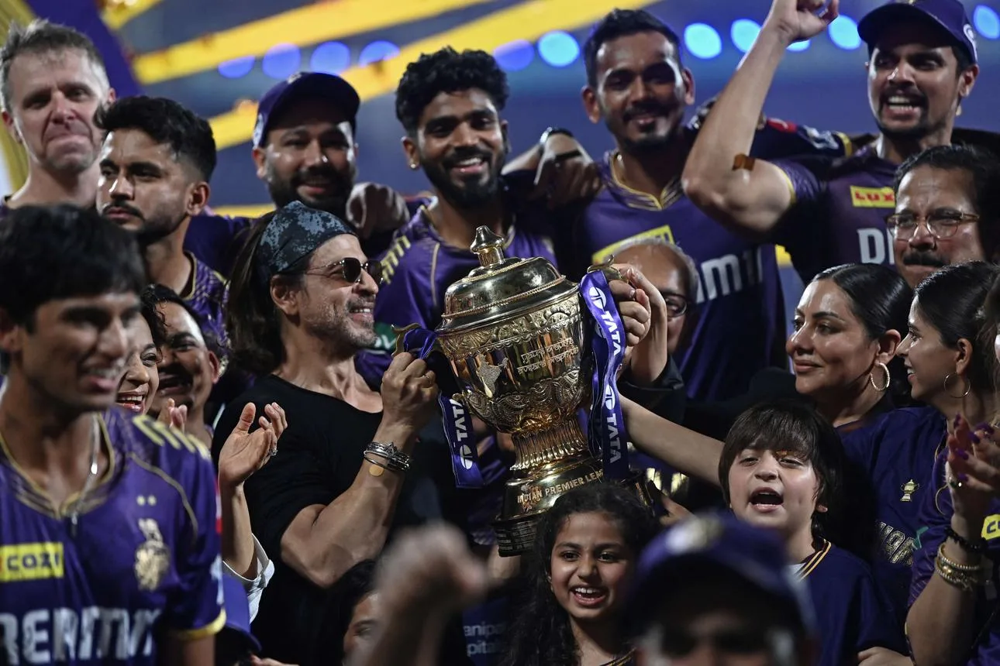

Part VI · The Kingdom by the Geek, 2024 to 2026 · 31 of 57
Chapter 29 · The Knights, from Kolkata to Los Angeles
The team he bought for US$75.09 million in 2008 won the IPL in 2012, 2014 and 2024. (Fact. Wikipedia: Kolkata Knight Riders) The third title came on 26 May 2024 in Chennai: Sunrisers Hyderabad bowled out for 113, the lowest total in an IPL final, and the match won by eight wickets in 10.3 overs. (Fact. Sky Sports, 26 May 2024) In the Caribbean the Trinbago Knight Riders, bought in 2015, have won five titles, the most in that league’s history. (Fact. Wikipedia: Trinbago Knight Riders) Eight league titles on two continents. (Fact, count) [Unverified] the dates the group entered Major League Cricket in the United States and the ILT20 in the UAE.

Kolkata Knight Riders, IPL champions, 26 May 2024. (Image: Final Thesis archive)

The Knight Riders Cricket Ground, Los Angeles, 2026. (Image: Final Thesis archive)
On 1 July 2026 he welcomed fans to the Knight Riders Cricket Ground at Fairplex in Pomona, Los Angeles, the home of his American team: “Welcoming you all to the Knight Riders Cricket Ground, LA.” (Fact. Khaleej Times, 2 July 2026) In 2012 a cricket association had banned him from a stadium in Mumbai for five years. Fourteen years later he opened a cricket ground of his own, in America. (Fact; Analysis)